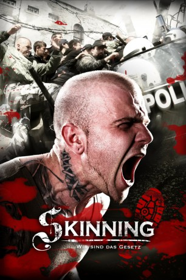
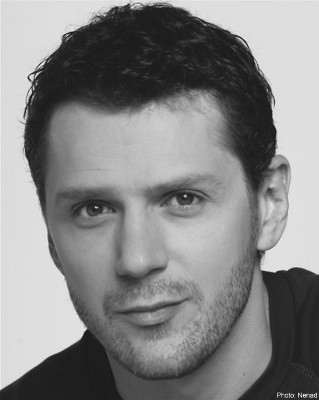

#10760 Skinning - Wir sind das Gesetz
Alternativ: Skinning (Englischer Titel)
 
 IMDB-Wertung: 6.5 / 10
IMDB-Wertung: 6.5 / 10  Metascore: 0
Metascore: 0 
Der junge Novica wächst in Belgrad auf. Er ist ein begnadeter Mathematikschüler, was ihm jedoch im Leben fehlt, sind Freunde, Liebe und Respekt. Den Respekt und die Freundschaften sucht er sich in der Skinhead-Gruppe seines Mitschülers Relja, die Liebe bei dessen Freundin Mina. Doch dabei sinkt er immer tiefer in einen Strudel aus Gewalt und Hass und gerät sehr bald mit dem Gesetz und korrupten Polizisten in Konflikt...
Jahr: 2010
Dauer: 101 Minuten
FSK: 16
Land: Serbien Studio: New KSMTonspuren: DTS - ,
Untertitel: Deutsch, Englisch,
Auflösung: 1080p (1920x1080) Größe: 8960 MB
Genre: Action, Drama, Krimi
Regisseur: Stevan Filipovic
Drehbuch: Stevan Filipovic, Stasa Koprivica, Dimitrije Vojnov, Natasa Vranjes
Soundtrack: Ryan Leach
Darsteller:
- Nikola Rakocevic als Novica
- Bojana Novakovic als Mina
- Nikola Kojo als Inspektor Milutin
-  Dragan Micanovic als Profesor matematike
- Nikola Glisic als Dizelas 4
- Branislav Jevic als Patolog
- Viktor Savic als Relja
- Natasa Tapuskovic als Inspektorka Lidija
- Srdjan Miletic als Pufta
- Milos Tanaskovic als Mirko
- Predrag Ejdus als Profesor Hadzi-Tankosic
- Jasmina Avramovic als Dezurna profesorka
- Vladimir Tesovic als Stanislav
- Milan 'Caci' Mihailovic als Novicin otac
- Bojan Lojkovic als Svarog
- Joana Knezevic als Valkira
- Zoran Nastic als Zver
- Bojan Buzdimirovic als Srafciger
- Milos Petrovic als Urke
- Lazar Sakan als Lepi
- Nikola Vasiljevic als Brka
- Marko Janketic als Boki
- David Ibrovic als Klinac
- Vujadin Milosevic als Mladen Zarkovic-Djomla
- Uros Jankovic als Djomlin dizelas 1 - Kure
- Vuk Kostic als Krezubi dizel na tribinama
- Marko Gizdavic als Dizelas 2
- Milan Ojdanic als Dizelas 3
- Igor Milic als Dizelas 5
- Sani Meha als Dizelas 6 / Ubijeni Rom
- Vojo Miladic als Interventna policajac 1
- Milos Brckalo als Interventna policajac 2
- Djordje Djokovic als Fudbaler Dragosavac
- Nenad Mersnik als Puftin dizel 1
- Stefano Nocerino als Puftin sin
- Milos Savic als Obezbedjenje FK 'Kosancic'
- Mirela Krajinovic als Predsednica FK 'Kosancic'
- Ivan Panic als Mirelin bodigard
- Milos Eric als Elvira
- Ivan Petrovic als Policajac islednik 1
- Mladen Nikolic als Policajac islednik 2
- Mladen Miletic als Policajac u kancelariji
- Milan Stojanovic als Policajac u kancelariji 2
- Ljupce Vitanov als Uhapseni
- Vladimir Koricanac als Svedok
- Milos Jovanovic als Crtac foto-robota
- Gospodja Julijana als Mrtvozornik
- Igor Bencina als Mladi policajac
- Predrag Vasic als Oskar
- Jovan Ristic als Forenzicar 1
Datei: X:\NEU\Skinning - Wir sind das Gesetz (2010, FSK16, 1920x1080).mkv seit 22.02.2019
 Es gibt insgesamt 187 Filme in der Gruppe 'NEU'
Es gibt insgesamt 187 Filme in der Gruppe 'NEU'